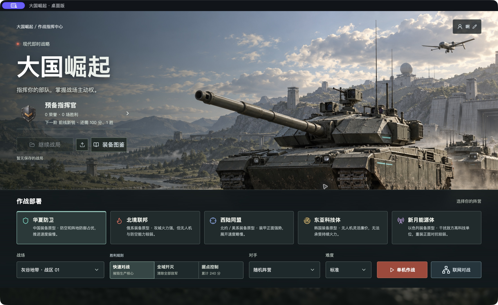
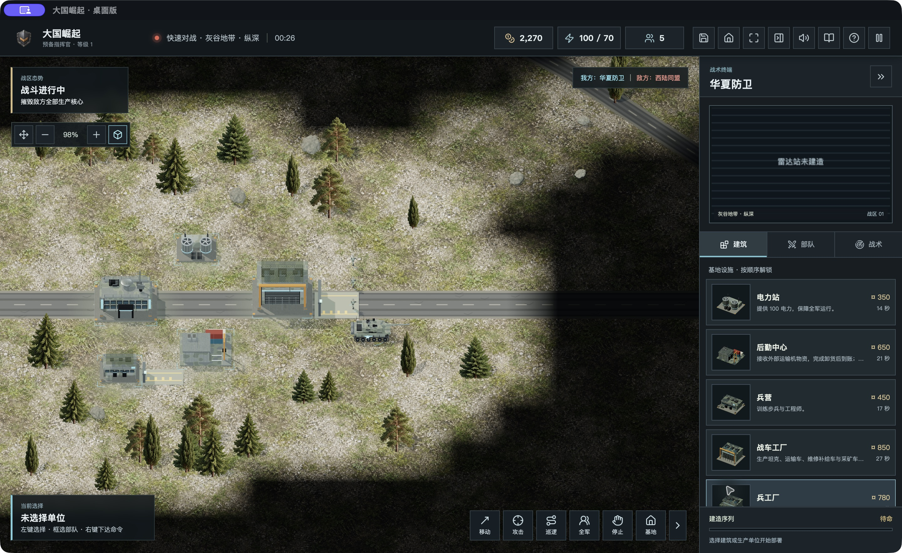
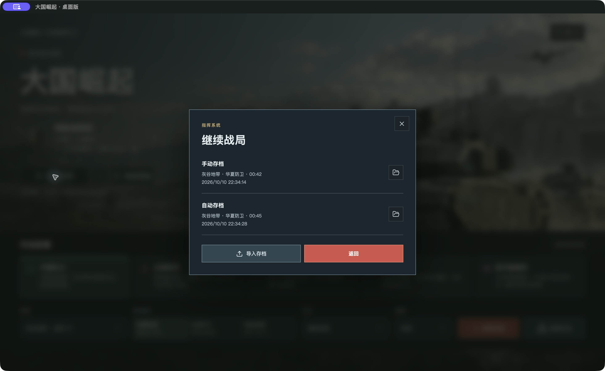
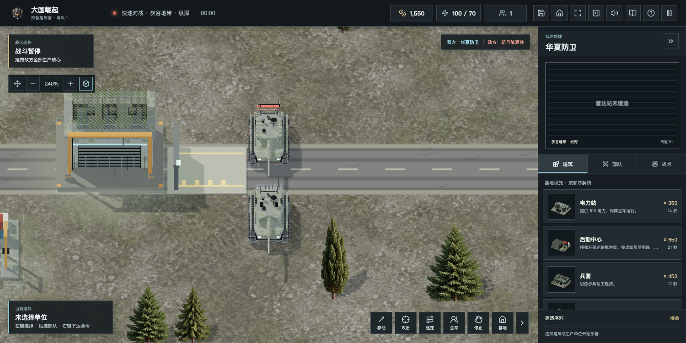
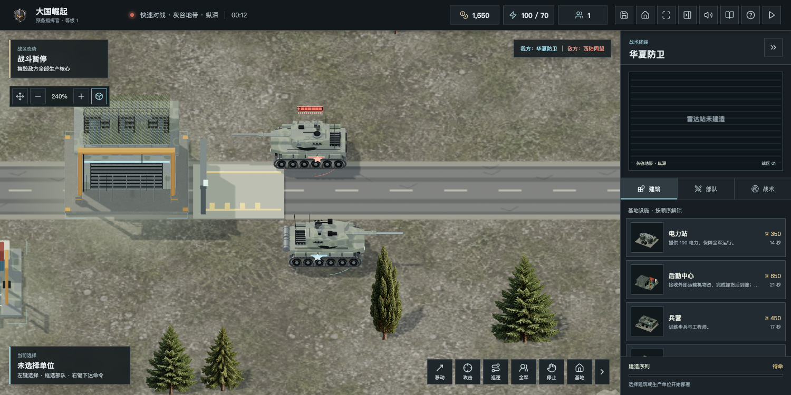
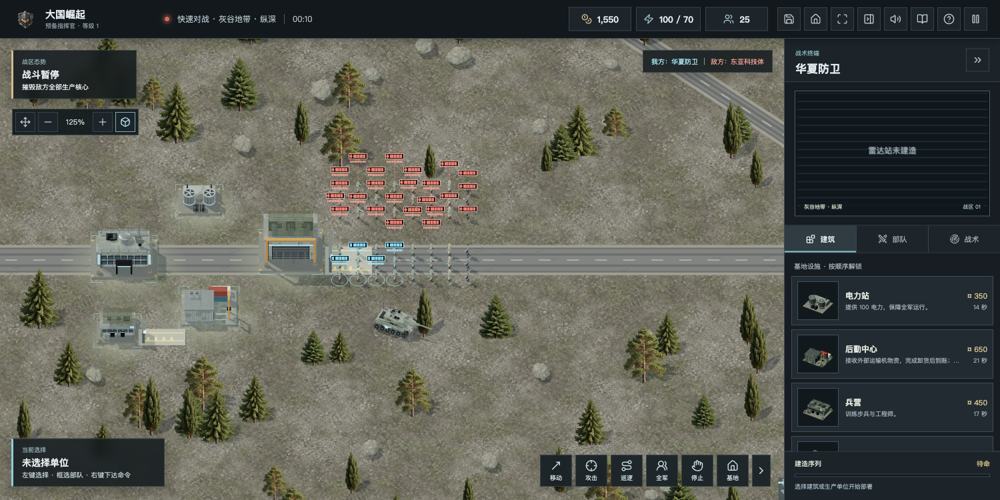
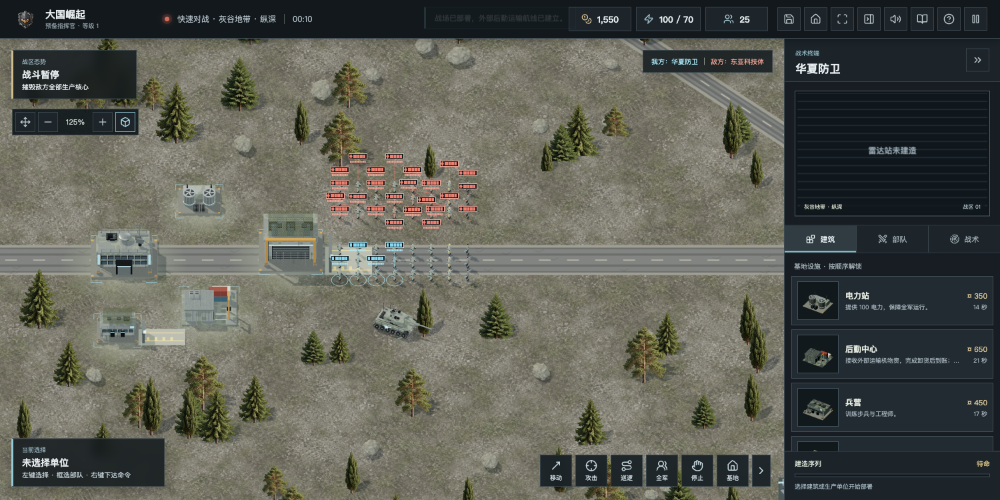

公众号内部草稿，未发布。截图标注了原生桌面与浏览器来源；原生画面来自这台 Apple Silicon Mac 的测试副本，不能视为其他系统实机结果。桌面联网等待 HTTPS 域名配置，当前暂未开放。
从浏览器试玩走向可安装的桌面应用，《大国崛起》这次迈出了一步。变化不只是多了一个图标：游戏素材随应用安装，单机战场直接在本机窗口里打开，保存战局也有了系统文件入口。

网页入口适合点击即玩和分享；桌面端则把游戏本体与素材带到电脑里。安装后启动单机不需要另开 Vite 或 Node 服务。它使用 Tauri 和系统 WebView 来呈现现有三维战场，桌面外壳负责窗口和系统文件能力。
这并不意味着换成桌面端后帧率必然提升。地图、部队仿真、渲染与显卡驱动仍决定体验，当前没有足够实测支持“桌面版性能翻倍”之类的结论。

这台 Mac 已实际进入和退出原生全屏。单机进度保存后，能够从存档列表恢复到相同的战局时刻；游戏中的手动与自动存档仍分别保留。

桌面版接入了系统文件导入与导出，以及应用数据目录备份。系统保存对话框已实际弹出，完整文件导出再导入的验收仍在继续；不能把弹窗出现写成整个流程已经通过。
桌面联网目前暂未开放，等待申请并配置有效的 HTTPS 域名。现有公开网页对战服务仍运行在此前 HTTP 入口；macOS 的 App Transport Security 会阻止桌面 WebView 加载它。
这次实测发现了点击联网后白屏的问题，原生日志错误码为 -1022。修复没有关闭 ATS：当前桌面入口明确显示等待 HTTPS 的说明，失败可返回单机。后续安全入口就绪，再开放独立联网窗口和验收大厅。
人物武器会跟随目标调整俯仰，开火后短暂保持瞄准，待机时保留轻微动作。坦克转向时，两侧履带运动也会相应变化。
99A 增加了后部装饰油桶、固定带和支架，闲置时轻微抬炮，移动与交战时恢复对应姿态。这是对具体装备的处理，并未统一套到所有坦克上。


这轮也修正了桥面坦克和桥下舰船穿过桥面直接互射的问题。移动速度保持原设定，平衡调整仍需更长对局的数据支持。
远景步兵使用更轻的模型，近景保留细节。既有固定 240 单位场景记录中，三角形减少约 46.8%，GPU 中位耗时减少约 31.2%；整体交战帧率并未明显提升，仿真与绘制调用仍待优化。这组记录来自浏览器受控场景，不能推广成所有桌面设备的性能承诺。


工作流覆盖 Mac Apple Silicon、Mac Intel、Windows x64、Linux x64 和 ARM64。构建产物与实际运行是两件分别要验证的事，下面按当前结果区分。
| 平台 | 构建与实机状态 |
|---|---|
| Mac Apple Silicon | 本机 app 构建通过，三维单机、保存与恢复、全屏已实测；文件导入导出继续验收 |
| Mac Intel | CI 构建成功，未实机验证 |
| Windows x64 | CI 构建成功，未实机验证 |
| Linux x64 / ARM64 | CI 构建成功，未实机验证；需要 WebKitGTK 4.1、GTK3 与 WebGL2 |
| 麒麟 / 统信 UOS | 银河麒麟桌面 V10（具体SP未验）、统信UOS桌面 V20（具体更新版本未验）均未实机验证；x86_64/aarch64仅为候选目标，需核对系统源中的WebKitGTK 4.1、GTK3及GPU驱动，不保证可安装 |
| 龙芯 / 申威 | 未提供支持 |
Linux 构建目标为 x86_64 与 aarch64 的 GNU 平台，不能由“ARM64”推导出所有国产 CPU 或系统都适配。若某一麒麟/UOS版本没有对应的 WebKitGTK 4.1 包或图形驱动不能提供 WebGL2，仍需单独适配和实测。
macOS 实验包使用 ad-hoc 签名，未经过 Apple 公证；Windows 未代码签名。不要关闭系统安全保护。安装前请核对文件名、架构和 SHA256。
服务器下载资源正在准备，匿名 GET/HEAD、大小与 SHA256 通过后再补充下载状态。当前不把构建配置或未校验文件写成已交付。
现有网页试玩与联机入口 · 服务器下载中心 · 桌面版源码分支 · 本轮跨平台构建记录
网页回归 282/282 通过，Rust 3/3 通过，网页构建通过；五平台 CI 均已成功并生成产物。Mac ARM64 app/DMG 已在本机构建并校验签名完整性。
游戏会继续完善，欢迎带着系统版本、处理器架构、显卡和复现步骤反馈问题。桌面端这一步的价值，是把单机体验、窗口能力和可带走的存档做扎实；联网和各系统兼容则按实际验收逐项开放。
此文件仅为公众号草稿，没有群发或发布到公众号。